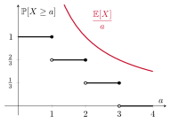

Lecture 2. Functions of random variables and concentration inequalities pdf
Introduction
Although we saw in Lecture 1 that all the information about a (sequence of) random variable(s) is contained in the probability distribution, other important quantities can be extracted as expected values of functions of the random variable itself. The best known are the mean and the variance of a random variable $X$ with probability distribution $P_X(x)$ defined over the alphabet ${\cal X}$, respectively given by $$\begin{gather} \text{mean}(X) = \mathbb{E}[X] \tag{2.1}\\ \text{var}(X) = \mathbb{E}[(X-\mathbb{E}[X])^2] = \mathbb{E}[X^2]-(\mathbb{E}[X])^2 \geq 0. \tag{2.2} \end{gather}$$ Above, we introduced the expectation operator, defined for any function $f(x)$ as $$ \mathbb{E}[f(X)] = \sum_{x\in{\cal X}} f(x) P_X(x). \tag{2.3} $$
Problem 2.1. What is value of $p$ that maximizes the variance of a random variable $X$ taking values over the alphabet $\{0,1\}$ with probability distribution $\{p,1-p\}$?
Show solution
We first note that $0\leq p \leq 1$ for $X$ to have a valid probability distribution. The mean of $X$ is given by $\mathbb{E}[X]=\sum_{x\in{\cal X}} x P_X(x) = 0\cdot P_X(0) + 1 \cdot P_X(1) = P_X(1) = 1-p$. The second-order moment is given by $\mathbb{E}[X^2]=\sum_{x\in{\cal X}}x^2P_X(x) = 0^2 \cdot P_X(0) + 1^2\cdot P_X(1) = (1-p)$. Hence, $\text{var}(X)=\mathbb{E}[X^2]-(\mathbb{E}[X])^2 = 1-p-(1-p)^2 = p - p^2=p(1-p)$. The derivative of the variance with respect to $p$ is $1-2p$, which is positive for $p<\frac 12$, equal to zero or $p=\frac 12$ and negative for $p>\frac 12$, implying that there is a maximum at $p=\frac 12$. The value of such variance is $\text{var}(X)=\frac 14$.
Functions of random variables
Given a random variable $X$, the output of a deterministic function $f(x)$ is another random variable, that is $Y=f(X)$, with probability distribution $P_Y(y)$ and alphabet ${\cal Y}$. Obviously, both random variables are related. For example, calculating the expectation of $Y$ can be done in two ways: one by first finding the probability distribution $P_Y(y)$ and using that $\mathbb{E}[Y]=\sum_{y\in{\cal Y}} y\,P_Y(y)$, but as we already saw in $(2.3)$, another option is to express the probability summation in terms of the underlying random variable $X$, that is, $\mathbb{E}[Y]=\mathbb{E}[f(X)]=\sum_{x\in{\cal X}}f(x) P_X(x)$. Both are equivalent, and one might be more convenient than the other depending on the problem.
Problem 2.2. Let $X$ be an equiprobable random variable in $\{-1,0,1\}$. What is the variance of $|X|$?
Show solution
We can solve this problem in two ways. One is to discover the probability distribution of $Y=|X|$ and then calculate the variance, the other one is to directly calculate the variance by writing the expectations with respect to the underlying random variable $X$. Let us start with the first one. The absolute value of $X$ will take values over $\{0,1\}$, since $|-1|=|1|=1$. By the law of total probability, the probability distribution of $Y$ satisfies $P_Y(y)=\sum_{x\in{\cal A}} P_{Y|X}(y|x)P_X(x)$, where ${\cal A}$ is the set of values of $X$ such that $Y=y$. For example, for $Y=0$, we only have $x\in\{0\}$ and, since $P_{Y|X}(0|0)=1$ as $|X|$ is a deterministic function, $P_Y(0)=P_X(0)=\frac 13$. Similarly, for $Y=1$ we have $x\in\{-1,1\}$. Again, $P_{Y|X}(1|-1)=P_{Y|X}(1|1)=1$ and therefore $P_Y(1)=P_X(-1)+P_X(1)=\frac 23$. It only remains to calculate ${\rm var}(Y)$ using $(2.2)$ from: $$\begin{gather} \mathbb{E}[Y^2] = \sum_{y\in\{0,1\}} y^2 P_Y(y) = 0^2 \cdot P_Y(0) + 1^2 \cdot P_Y(1) = \frac 23, \tag{2.4}\\ (\mathbb{E}[Y])^2 = \Biggl( \sum_{y\in\{0,1\}} y P_Y(y) \Biggr)^2 = \Biggl( 0 \cdot P_Y(0) + 1 \cdot P_Y(1) \Biggr)^2 = \biggl( \frac 23 \biggr)^2 = \frac 49. \tag{2.5}\end{gather}$$ Then, ${\rm var}(Y)=\frac 23 - \frac 49 = \frac 29$. The second way involves: $$\begin{gather} \mathbb{E}[Y^2] = \mathbb{E}[|X|^2] = \sum_{x\in\{-1,0,1\}} |x|^2 P_X(x) = |-1|^2\cdot P_X(-1) + |0|^2\cdot P_X(0) + |1|^2 \cdot P_X(1) = \frac 23, \tag{2.6}\\ (\mathbb{E}[Y])^2 = (\mathbb{E}[|X|])^2 = \Biggl( \sum_{x\in\{-1,0,1\}} |x| P_X(x) \Biggr)^2 = \Biggl( |-1|\cdot P_X(-1) + |0| \cdot P_X(0) + |1|\cdot P_X(1) \Biggr)^2 = \biggl( \frac 23 \biggr)^2 = \frac 49, \tag{2.7}\end{gather}$$ leading to the same result.
We will also encounter functions involving three random variables. For example:
Example 2.3. Let $X$ and $Y$ be two independent random variables both taking values in $\{0,1\}$ with probability distribution $\bigl\{ \frac 12,\frac 12\bigr\}$, and define a new random variable as $Z=X+Y$. All the possible combinations of the sum $X+Y$ leads to the alphabet of $Z$, that is, $\{0,1,2\}$. Next, we can write in general that $$\begin{gather} P_Z(z)=\sum_{(x,y)\in\{0,1\}^2} P_{XYZ}(x,y,z), \tag{2.8}\end{gather}$$ where $P_{XYZ}(x,y,z)$ is the joint distribution of the three random variables. Such distribution can be always factorized as $P_{XYZ}(x,y,z)=P_{Z|XY}(z|xy)P_{XY}(x,y)$ and, since $X$ and $Y$ are independent, further as $P_{XYZ}(x,y,z)=P_{Z|XY}(z|xy)P_{X}(x)P_Y(y)$. Now, for example, to determine $P_Z(1)$ we note that since $X+Y$ (the sum operation) is a deterministic function we have that $P_{Z|XY}(1|0,0)=0$, $P_{Z|XY}(1|0,1)=1$, $P_{Z|XY}(1|1,0)=1$ and $P_{Z|XY}(1|1,1)=0$. Combining everything, $$\begin{align} P_Z(1) &= \sum_{(x,y)\in\{0,1\}^2} P_{XYZ}(x,y,1) \tag{2.9}\\ &= \sum_{(x,y)\in\{0,1\}^2} P_{Z|XY}(1|x,y)P_X(x)P_Y(y) \tag{2.10}\\ & = \frac 14 \left(P_{Z|XY}(1|0,0) + P_{Z|XY}(1|0,1) + P_{Z|XY}(1|1,0) + P_{Z|XY}(1|1,1) \right) \tag{2.11}\\ &= \frac 12. \tag{2.12}\end{align}$$ In a similar way we can determine that $P_Z(0)=P_Z(2)=\frac 14$.
Markov's and Chebyshev's inequalities
For a positive random variable $X$ and a value $a>0$, Markov's inequality states that $$ \mathbb{P}[X \geq a] \leq \frac{\mathbb{E}[X]}{a}. \tag{2.13} $$
Example 2.4. Suppose $X$ takes values in $\{1,2,3\}$ with equal probability. Then, we can calculate $\mathbb{P}[X\ge a]$ as a function of $a$ using that $$ \mathbb{P}[X\geq a] = \sum_{x\in{\cal A}} P_X(x), \tag{2.14}$$ where ${\cal A}$ is the set of values of $X$ satisfying the event “$X\geq a$”. For $a\in(-\infty,1]$, all three values satisfy the condition, therefore $\mathbb{P}[X\geq a]=1$. For $a\in(1,2]$ only two values satisfy the condition hence $\mathbb{P}[X\geq a]=\frac 23$. In conclusion, we obtain the tail (survival) function $\mathbb{P}[X\ge a]$ of the random variable $X$ evaluated at $a$: $$ \mathbb{P}[X\geq a] = \begin{cases} 1 & a \in (-\infty,1]\\ \frac 23 & a \in (1,2]\\ \frac 13 & a \in (2,3]\\ 0 & a \in (3,+\infty); \end{cases} \tag{2.15}$$ while Markov's upper bound in $(2.13)$ is given by $\frac{\mathbb{E}[X]}{a} = \frac{2}{a}$. Plotting both quantities together, we obtain Figure 2.1, validating the inequality for this example.

On the other hand, Chebyshev's inequality relates the probability that a random variable $X$ is at some distance from the mean with its variance. Let $X$ be a random variable with a non-zero variance ${\rm var}(X)$. For any $k>0$, $$ \mathbb{P}\bigl[|X-\mathbb{E}[X]| \geq k\bigr] \leq \frac{{\rm var}(X)}{k^2}. \tag{2.16} $$
Problem 2.5. For an integer $n\geq 1$, we define the random variable $Z$ as $Z=X_1+\ldots+X_n$, where $(X_1,\ldots,X_n)$ is a sequence of i.i.d. random variables each distributed as $X_i\in\{0,1\}$ with probability distribution $\{1-p,p\}$. Then, as $n\to\infty$ and for any $k>0$, the probability $\mathbb{P}\bigl[|Z-np| < nk\bigr]$ converges to...?
Show solution
The probability in the statement resembles that of Chebyshev's inequality in $(2.16)$. First, we note that $\mathbb{E}[Z]=\mathbb{E}[X_1+\ldots+X_n]=\mathbb{E}[X_1]+\ldots+\mathbb{E}[X_n]=n \mathbb{E}[X]$, where $\mathbb{E}[X]=(1-p)\cdot 0 + p\cdot 1 = p$. Hence, $$ \mathbb{P}\bigl[|Z-np| < nk\bigr] = \mathbb{P}\bigl[|Z-\mathbb{E}[Z]| < nk\bigr] = 1 - \mathbb{P}\bigl[|Z-\mathbb{E}[Z]| \geq nk\bigr] \geq 1 - \frac{{\rm var}(Z)}{n^2k^2}. \tag{2.17}$$ Since $X_i$ are independent, the variance of the sum is the sum of variances, that is $$ {\rm var}(Z) = {\rm var}(X_1+\ldots+X_n) = {\rm var}(X_1)+\ldots+{\rm var}(X_n) = n {\rm var}(X), \tag{2.18}$$ where ${\rm var}(X)=\mathbb{E}[X^2]-(\mathbb{E}[X])^2 = p-p^2=p(1-p)$. Combining everything, we obtain that $$ \mathbb{P}\bigl[|Z-np| < nk\bigr] \geq 1 - \frac{p(1-p)}{nk^2}. \tag{2.19}$$ As $n\to\infty$, the inequality above results in $$ \lim_{n\to\infty} \mathbb{P}\bigl[|Z-np| < nk\bigr] \geq 1. \tag{2.20}$$ Since a probability cannot exceed $1$, we can conclude that $ \lim_{n\to\infty} \mathbb{P}\bigl[|Z-np| < nk\bigr] = 1$.
The result of Problem 2.5 is a rephrasing of the well-known weak law of large numbers.
The weak law of large numbers
Consider a sequence of independent and identically distributed (i.i.d.) random variables $(X_1,\ldots,X_n)$, each $X_i$ with finite expectation $\mathbb{E}[X]$ and variance ${\rm var}(X)$. Then, the sample mean defined as $$ \overline{X} = \frac{X_1+\ldots+X_n}{n}, \tag{2.21}$$ converges (in probability) to the statistical mean $\mathbb{E}[X]$. Mathematically speaking, $$ \lim_{n\to\infty} \mathbb{P}\left[|\overline{X}-\mathbb{E}[X]|< \epsilon \right] = 1, \tag{2.22}$$ that is, the probability that the sample mean is far away from the statistical mean vanishes as $n\to\infty$.
Problem 2.6. Consider the sequence of i.i.d. random variables $(X_1,\ldots,X_n)$ where each $X_i$ takes values in $\{1,e\}$ with equal probability and define a new random variable $Y$ as $$ Y = \frac{\ln(X_1)+\ldots+\ln(X_n)}{n}. \tag{2.23}$$ Then, as $n\to\infty$, the random variable $Y$ converges to?
Show solution
Since $(X_1,\ldots,X_n)$ is a sequence of i.i.d. random variables and $\ln(x)$ is a deterministic function of each random variable, $\bigl(\ln(X_1),\ldots,\ln(X_n)\bigr)$ is also a sequence of i.i.d. random variables. We further note that $Y$ is the sample mean of the random variable $\ln(X)$, with mean $\mathbb{E}[\ln(X)] = \sum_{x\in\{1,e\}} \ln(x) P_X(x) = \frac 12 \ln(1) + \frac 12 \ln(e) = \frac 12$ and variance ${\rm var}(\ln(X))=\mathbb{E}[\ln(X)^2]-(\mathbb{E}[\ln(X)])^2 = \sum_{x\in\{1,e\}} \ln(x)^2P_X(x) - \left( \frac 12 \right)^2 = \frac 12 \ln(1)^2 + \frac 12 \ln(e)^2 - \frac 14 = \frac 12 - \frac 14$. Given that $\ln(X)$ has finite expectation and variance, by the weak law of large numbers, $Y$ converges (in probability) to the statistical mean $\mathbb{E}[\ln(X)]$, that is, $\frac 12$.